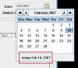

|
|
Invoices
Bill To Leave this alone for a one-off sale or click Bill To: to open Connections and select a customer. You may type in customer information also. Be sure to hit ENTER after each line when typing in customer information. Logo You logo can be displayed on invoices by specifying an image file in the Settings module under the Company Information tab. Date Today's date is filled in, click the calendar icon to select a new date. If you have opened the calendar object and do not want to select a date just click on 'today' as highlighted in the picture.  Quantity Specify a quantity before scanning or searching for an inventory item. You can change the quantity in the invoice's table-view also. Any item can have its QTY or UNIT price changed manually by clicking on the field in the invoice's table-view and typing in a new value. UPC / Code Add products using different coding systems on the fly. Select UPC or Code and hit ENTER to launch Inventory Manager to select products; or rapidly scan items in with a barcode scanner. You may also type in the Code or UPC and hit ENTER. Misc Item Click the Misc Item button to add an item that you do not keep in Inventory. The description field for the Misc Item dialog stores past entries and auto-completes to save you from typing so much. Be sure to input the real cost of the item or your COGS Report will be incorrect. Packing Slip Hold down Ctrl and Click each row on the invoice to select the items you want on the packing slip. With those items selected Click the Packing Slip button. A print dialog appears allowing you to verify and set printer preferences or options. Hit OK to print the packing slip. No PDF is created for packing slips. Weight Hold down Ctrl and Click each row on the invoice to select the items you want to calculate the weight for. This is a convenience utility for those who have to ship packages. Print Quote You create a quote the same as creating an invoice. When you want a quote instead of an invoice you can click the Print Quote button. If you want to save that invoice for later you can click the Hold button. Message Type a message to your customer or pick from a list that you create with the Invoice Message Manager that is accessed by pressing the Message button. Take Payment Before you post an invoice you can select Take Payment to process a payment against the invoice that will be reflected when it prints. Post Click this button when you are finished building the invoice. Pressing this button stores the invoice and attempts to generate a PDF (unless PDF is canceled). Hold The Hold button freezes an invoice (or Quote) in progress and saves it to be resumed later. You can also modify it, print it as a quote and put it on Hold again as many times as needed.
|